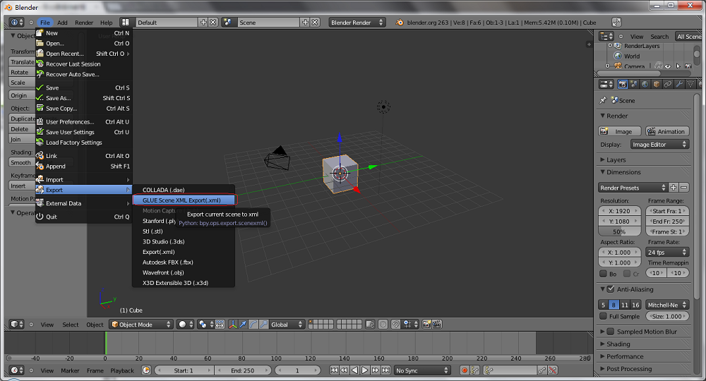
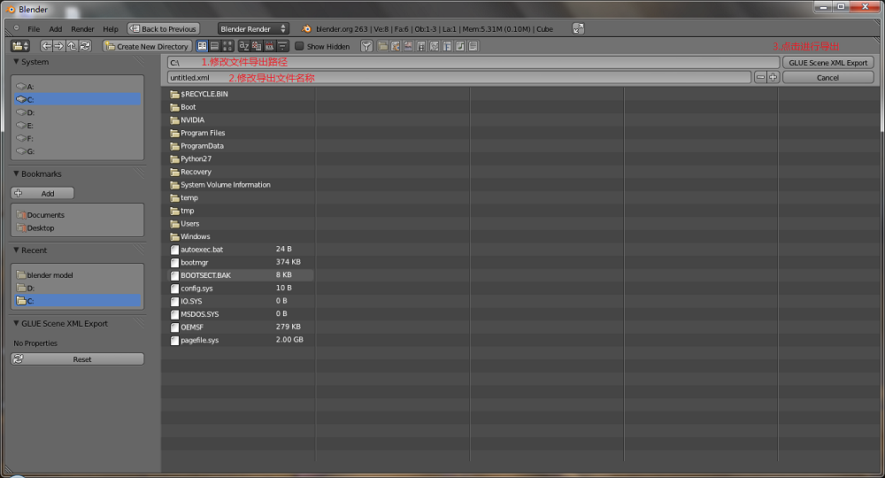

本教程讲解如何向blender中添加xml导出器
一：安装blender2.63
1、首先需要保证电脑中安装blender2.63。可以从这里下载相应版本的blender：32位操作系统，64位操作系统。
2、下载完成之后安装软件，这里就不再讲解如何安装软件了，只需要点击"下一步"即可。
二：解压blender_plugin.zip覆盖scripts目录
1、安装完成之后我们找到软件的安装目录。例如我这里的安装目录是在D盘的根目录下。
2、我们找到D:\Blender\2.63\scripts目录。如果安装在其他目录下只需要修改相应的盘符即可。
3、我们找到这里 ，将目录下的scripts覆盖D:\Blender\2.63\scripts这个文件夹就可以了。
4、之后我们重新启动一下blender即可。
三：导出模型信息
1、之后我们打开blender，在菜单栏中选中File，然后找到Export,选中GLUE Scene XML Export(.xml)。如下图
2、我们在之后弹出的界面中修改文件的导出路径和文件的名称然后点击GLUE Scene Export按钮就完成了。如下图
